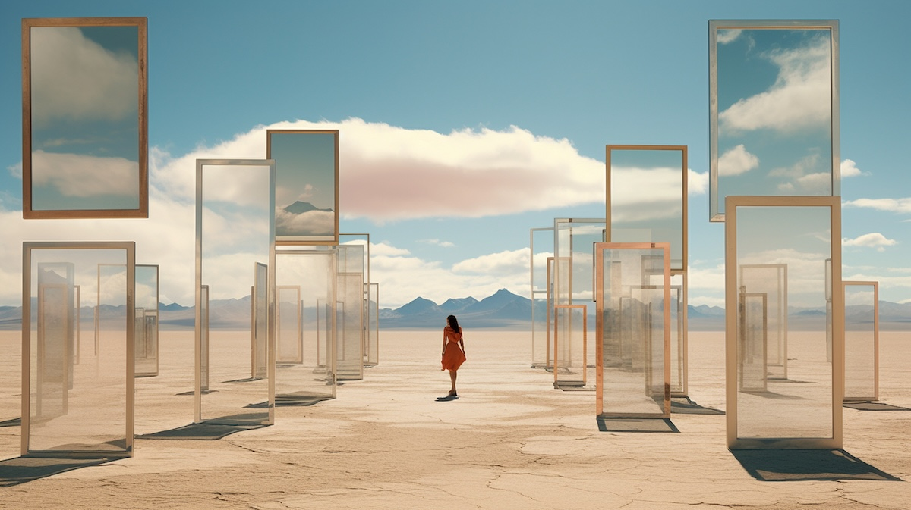

Rüyada Aynı Mekâna Gitmek Ne Anlama Gelir?

Rüyalar bazen birbirinden tamamen farklı sahnelerden oluşurken, bazen de sürekli aynı mekânın tekrarlandığı bir döngü gibi hissedilebilir. Birçok insan hayatının farklı dönemlerinde rüyasında aynı eve, aynı sokağa, aynı okula veya daha önce hiç görmediği ama rüyalarında tekrar tekrar karşılaştığı bir mekâna gittiğini fark eder.
Peki rüyada sürekli aynı mekâna gitmek ne anlama gelir? Bu durum psikolojik mi, bilinçaltı ile mi ilgili, yoksa sembolik bir anlam mı taşır? Bu yazıda rüyalarda tekrar eden mekânların olası anlamlarını psikoloji, bilinçaltı ve rüya sembolleri açısından inceleyeceğiz.
Rüyada Tekrarlayan Mekânlar Neden Görülür?
Rüyada aynı mekâna tekrar tekrar gitmek oldukça yaygın bir rüya deneyimidir. Bunun en temel nedeni, beynin duygusal açıdan önemli olan deneyimleri işleme biçimidir.
İnsan beyni, özellikle güçlü duygular barındıran anıları daha sık hatırlar ve işler. Bu nedenle geçmişte yaşanmış bir olayla bağlantılı bir mekân ya da bilinçaltında sembolik anlam taşıyan bir yer rüyalarda tekrar tekrar ortaya çıkabilir.
Tekrarlayan rüya mekânlarının ortaya çıkmasının bazı yaygın nedenleri şunlardır:
- Çözülmemiş duygular veya geçmiş deneyimler
- Hayatta devam eden bir problem veya stres kaynağı
- Güven duygusu veya nostalji
- Bilinçaltının bir mesaj iletmeye çalışması
Bilinçaltı ve Rüya Mekânları
Psikologlara göre rüyalarda görülen mekânlar genellikle kişinin iç dünyasını temsil eder. Bir ev, oda, okul ya da şehir gibi yerler çoğu zaman zihinsel durumun sembolik bir yansımasıdır.
Örneğin:
- Ev: Kişinin iç dünyasını veya kimliğini temsil edebilir.
- Okul: Öğrenme, gelişim veya geçmiş deneyimlerle bağlantılı olabilir.
- Eski mahalle: Nostalji, geçmişe özlem veya çözülememiş anılar anlamına gelebilir.
- Bilinmeyen ama tanıdık gelen bir yer: Bilinçaltında oluşmuş sembolik bir alan olabilir.
Rüyada sürekli aynı mekâna gitmek, beynin belirli bir duygu veya düşünce üzerinde çalıştığını gösterebilir.
Rüyada Sürekli Aynı Eve Gitmek
Rüyada tekrar tekrar aynı eve gitmek oldukça yaygın görülen bir rüya türüdür. Bu ev bazen kişinin çocukluk evi olabilir, bazen de gerçekte var olmayan ama rüyada tanıdık gelen bir yer olabilir.
Bu rüya genellikle şu anlamlara gelebilir:
- Geçmişle ilgili duygusal bir bağ
- Güvenli bir alana dönme isteği
- Kimlik veya kişisel gelişim süreci
- İçsel bir keşif
Bazı rüya yorumcularına göre evin odaları, kişinin farklı yönlerini temsil eder. Örneğin bodrum katı bilinçaltını, çatı katı ise düşünceleri ve hayalleri sembolize edebilir.
Rüyada Aynı Sokakta veya Şehirde Dolaşmak
Bazı insanlar rüyalarında sürekli aynı şehirde, sokakta ya da mahallede dolaştıklarını söyler. İlginç olan ise bu yerlerin bazen gerçek hayatta var olmamasıdır.
Bu tür rüyalar genellikle zihnin oluşturduğu bir “rüya haritası” ile açıklanır. Beyin, farklı anıları ve mekânları birleştirerek yeni bir ortam yaratabilir.
Bu durum şu anlamlara gelebilir:
- Hayatta yön arayışı
- Bir karar sürecinde olmak
- Geçmiş ve gelecek arasında kalmak
- Bilinçaltının bir konuyu tekrar tekrar işlemeye çalışması
Rüyada Hiç Var Olmayan Ama Tanıdık Gelen Mekânlar
Bazı rüyalar oldukça ilginçtir: Kişi daha önce hiç gitmediği bir yere rüyasında defalarca gider ve o yer zamanla çok tanıdık hale gelir.
Araştırmalar, beynin rüya sırasında hafızadaki parçaları birleştirerek yeni mekânlar oluşturduğunu gösterir. Bu yüzden rüyadaki bir şehir, gerçek hayatta gördüğümüz farklı yerlerin birleşimi olabilir.
Bu tür rüyalar genellikle şu durumlarla ilişkilendirilir:
- Yaratıcı düşünce süreçleri
- Zihnin anıları yeniden düzenlemesi
- Günlük stresin işlenmesi
- Hayal gücünün aktif olması
Tekrarlayan Rüyalar Psikolojik Bir Mesaj Olabilir mi?
Psikoloji literatüründe tekrar eden rüyalar çoğu zaman çözülmemiş bir duyguya işaret eder. Beyin, gündüz fark edilmeyen bir duyguyu rüya aracılığıyla işlemeye çalışabilir.
Örneğin:
- Devam eden bir stres kaynağı
- Geçmişte yaşanan bir olay
- Alınması gereken bir karar
- Bastırılmış duygular
Rüyada aynı mekâna gitmek, zihnin bir konuyu “tekrar düşünmeye” çalıştığının işareti olabilir.
Bilimsel Açıdan Rüyaların Mekân Hafızası
Nörobilim araştırmaları, rüyaların büyük ölçüde beynin hafıza merkezleriyle ilişkili olduğunu göstermektedir. Özellikle hipokampus adı verilen beyin bölgesi, mekânsal hafızanın oluşmasında önemli rol oynar.
Bu nedenle rüyalar sırasında:
- Gün içinde görülen yerler
- Geçmişte ziyaret edilen mekânlar
- Hayal edilen ortamlar
birbirine karışabilir ve rüya dünyasında yeni bir yer oluşturabilir.
Rüyada Aynı Mekâna Gitmenin Olası Anlamları
Özetlemek gerekirse, rüyada sürekli aynı mekâna gitmenin farklı anlamları olabilir:
- Bilinçaltının çözmeye çalıştığı bir konu
- Geçmiş anılarla bağlantı
- Güvenli bir alan arayışı
- Hayatta yön bulma çabası
- Yoğun stres veya düşünce döngüsü
Bu rüyaların anlamı kişiden kişiye değişebilir. Çünkü rüyalar büyük ölçüde kişinin deneyimleri, duyguları ve yaşam koşullarıyla şekillenir.
Sonuç
Rüyada sürekli aynı mekâna gitmek birçok insanın deneyimlediği ilginç bir rüya türüdür. Bu durum çoğu zaman bilinçaltının duyguları ve anıları işlemeye çalışmasının doğal bir sonucudur.
Tekrarlayan rüya mekânları bazen geçmişle ilgili duyguların, bazen de hayatımızda çözüm aradığımız konuların sembolik bir yansıması olabilir. Rüyaları kesin bir kehanet olarak görmek yerine, zihnin kendini ifade etme biçimlerinden biri olarak değerlendirmek daha sağlıklı bir yaklaşım olacaktır.